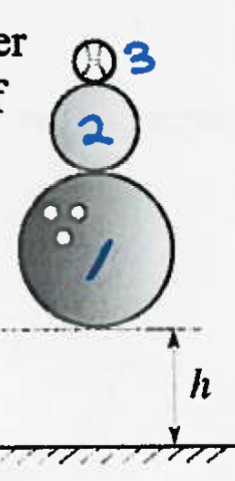

2016 SIN Problem 4
Question
Searching for the reason behind the superiority of Canadian 5-pin bowling over American 10-pin bowling, Donald Trump balances the smaller ball (mass \(M/2\)) on top of the bigger ball (mass \(M\)). He then places a baseball (mass \(M/4\)) on top of the stack. After careful contemplation, he eventually realizes that his experiment is pointless, and in a fit of anger drops the stack to the ground while yelling "you're fired!". If the Donald releases the stack from rest at a height \(h\) above the floor, what is the maximum height that the smallest ball will rise above its lowest point? Assume no mechanical energy is lost. Answer in terms of \(h\). \(\textbf{(A) } 1.67 \qquad\textbf{(B) } 2.56 \qquad\textbf{(C) } 3.22 \qquad\textbf{(D) } 6.53 \qquad\textbf{(E) } 11.3\)
Solution
Assume that the balls are separated by an infinitesimally small distance and that all collisions happen instantaneously. Due to conservation of energy, all the balls will be at a speed \(v=\sqrt{2gh}\) right as mass \(M\) hits the ground. Mass \(M\) then reverses direction keeping its speed and collides elastically with mass \(M/2\). The velocity of mass \(M/2\) right after the collision is given by the following equation (proved in Remarks): $$v'_2 = \frac{2m_1}{m_1+m_2}v_1 - \frac{m_1-m_2}{m_1+m_2}v_2$$ Setting the up direction to be positive, then \(v_1=v=\sqrt{2gh}\) and \(v_2=-v=-\sqrt{2gh}\). Substituting \(m_1=M\) and \(m_2=M/2\) gives: \begin{align*} v'_2 &= v\left(\frac{2m_1}{m_1+m_2} + \frac{m_1-m_2}{m_1+m_2}\right) \\ &= v\left(\frac{3m_1-m_2}{m_1+m_2}\right) \\ &= v\left(\frac{3M-\frac{M}{2}}{M+\frac{M}{2}}\right) \\ &= v\left(\frac{\frac{5M}{2}}{\frac{3M}{2}}\right) \\ &= \frac{5v}{3} \end{align*} Now, the mass \(M/2\) collides into the mass \(M/4\) which is still moving downwards at a speed of \(v=\sqrt{2gh}\). We can use the equation once again to find the final velocity of \(M/4\). \begin{align*} v'_3 &= v\left(\frac{5}{3}\cdot\frac{2m_2}{m_2+m_3} + \frac{m_2-m_3}{m_2+m_3}\right) \\ &= v\left(\frac{10m_2}{3m_2+3m_3} + \frac{3m_2-3m_3}{3m_2+3m_3}\right) \\ &= v\left(\frac{13m_2-3m_3}{3m_2+3m_3}\right) \\ &= v\left(\frac{\frac{13M}{2}-\frac{3M}{4}}{\frac{3M}{2}+\frac{3M}{4}}\right) \\ &= v\left(\frac{\frac{23M}{4}}{\frac{9M}{4}}\right) \\ &= \frac{23v}{9} \end{align*} Finally, using conservation of energy to find the maximum height of the baseball (mass \(M/4\)): \begin{align*} mgh_f &= \frac{1}{2}m\left(\frac{23v}{9}\right)^2 \\ h_f &= \frac{1}{2g}\cdot \frac{23^2}{9^2} \cdot (2gh) \\ h_f &= \frac{23^2}{9^2} h = 6.53h \end{align*} Therefore, the answer is \(\boxed{\textbf{(D) } 6.53}\)
Remarks
-
Consider two masses \(m_1\) and \(m_2\) moving towards each other with velocities \(v_1\) amd \(v_2\), respectively. We shall determine \(v'_2\), the final velocity of \(m_2\) after the elastic collision.
The velocity of the center of mass is $$v_{CM} = \frac{m_1v_1+m_2v_2}{m_1+m_2}$$ So in the frame of the center of mass, the velocity of \(m_2\) is: \begin{align*} v_{2,CM} &= v_2 - \frac{m_1v_1+m_2v_2}{m_1+m_2} \\ &= \frac{m_1v_2+m_2v_2-m_1v_1-m_2v_2}{m_1+m_2} \\ &= \frac{m_1v_2-m_1v_1}{m_1+m_2} \end{align*} After the collision, the velocity of \(m_2\) in the frame of the center of mass reverses to become \(v'_{2,CM}= \frac{m_1v_1-m_1v_2}{m_1+m_2}\). To get from the CM frame to the lab frame, we just have to add back the speed of the center of mass. Therefore: \begin{align*} v'_2 &= \frac{m_1v_1-m_1v_2}{m_1+m_2} + \frac{m_1v_1+m_2v_2}{m_1+m_2} \\ &= \frac{2m_1v_1-v_2(m_1-m_2oki)}{m_1+m_2} \\ \end{align*} which you can show is equivalent to the one used in the solution. Another way of solving this would be to write down both the conservation of energy as well as the conservation of momentum in the lab frame. However, that involves solving a tricky systems of equations involving quadratic equations and as such will not be shown here.